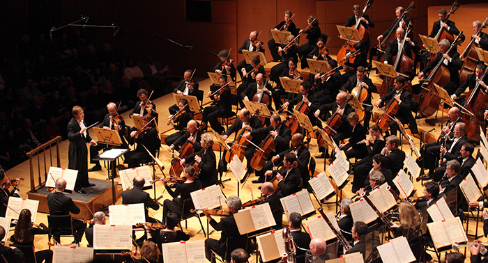
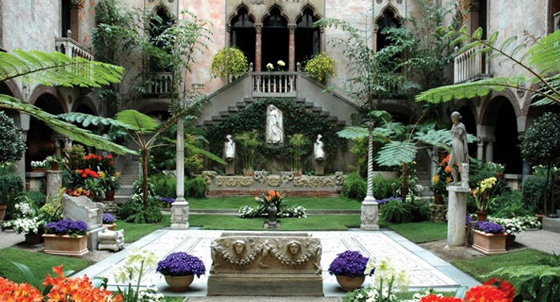
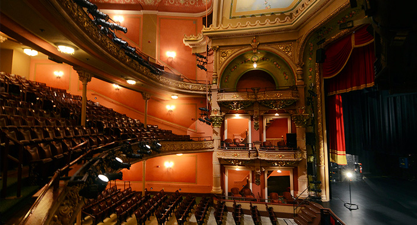
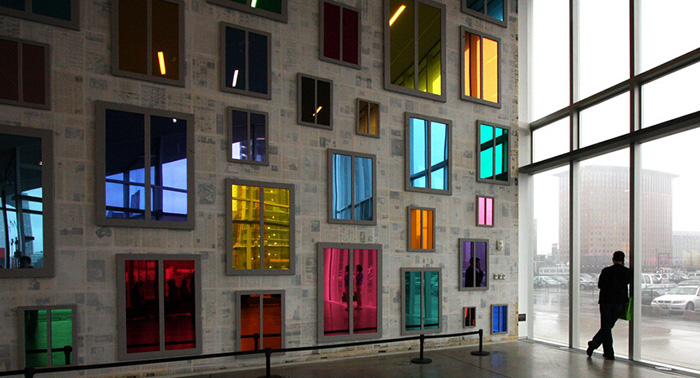
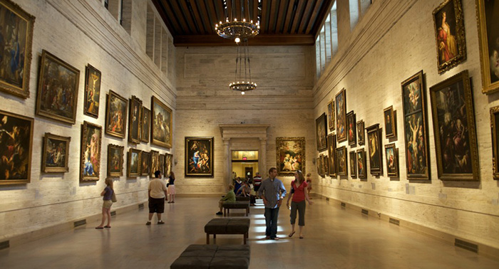
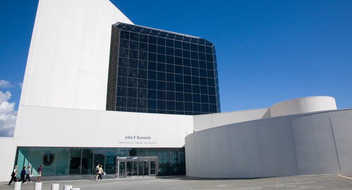
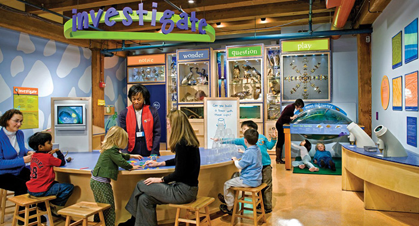

波士顿是马萨诸塞州的首府和最大城市，也是新英格兰地区的最大城市，是美国最古老、最有文化价值的城市之一。大量的高校给这座城市带来蓬勃朝气及艺术感染力。波士顿是高等教育的领头羊，也是极富欧洲风情的观光都市。

查尔斯河北岸的剑桥城是著名学府哈佛大学与麻省理工学院的所在地，独具特色的文化背景令这里成为一个著名的观光地，在此不仅能够体验来自两大重量级学府的校园美景之外，还能在其周边的博物馆感受悠久历史与特色展品。

波士顿交响乐大厅于1900年10月15日落成，是最早运用科学的声学原理设计的演出大厅之一。这里是世界最著名也最伟大的管弦乐团之一，波士顿交响乐团的常驻演出地。从约翰内斯•勃拉姆斯，到伦纳德•伯恩斯坦，这些大师的作品都曾被优秀的音乐家在此演绎。不过夏天到来时，波士顿交响乐团会驻扎坦格伍德音乐中心，位于同在波士顿，自然风光宜人的伯克郡。

波士顿最独特的地方——伊莎贝拉嘉纳艺术博物馆邀请你在此举办盛宴。自伊莎贝拉嘉纳在1903年建立起这间威尼斯风格的艺术博物馆，举行了盛大的仪式，这里就成为了优雅娱乐之地。如今，人们依然继续着这一传统，让每个人或者团体都有机会到此参观知名的藏品，这也是对新英格兰文化珍宝的传承与支持。对于每个场合，博物馆都配备齐全，从鸡尾酒迎宾宴和私人午餐到商业会议和大型晚宴。

殖民剧场是波士顿最古老的一直使用的剧院，在这个顶级的剧场里，百年来上演了无数百老汇表演、电影全球首映、音乐会和各种盛会。

矗立于南波士顿海滨之上的波士顿当代艺术博物馆建造于2006年，它具有轻装的玻璃和钢架结构，外观非常炫目。博物馆引人注目的悬挑式建筑结构，彰显着现代气息，从地板以指导天花板的玻璃墙让波士顿热闹的海港景观一览无余。这里展示了各种形式的当代的和前卫的艺术，不仅包括可视艺术和声光配合等现代装置，还有音乐、电影、录像和各类表演。

这是全美国最好的艺术博物馆之一，收藏了超过45万件展品，从公元前6000年左右制造的物件，到当代艺术家的杰作，无论你走在哪里，都可以发现珍宝。经过了2010年的修缮之后，新增的美国之翼展厅令博物馆锦上添花，其中的53间画廊展现了来自美洲大陆的5000件宝物，包括保罗•里维尔的银器和温斯洛•霍默的画作等。
伯克利爵士音乐节是波士顿地区最大的狂欢派对。音乐节以爵士、拉丁、蓝调为主旋律吸引了成千上万的参与者，最多的时候有超过七万人来这里一同分享世界级的音乐、美食和波士顿南端老街区的美好时光。家庭娱乐活动包括了脸部绘画、照相和儿童音乐乐园，音乐节是你不能错过的一次听觉盛宴！2014年的音乐节将于9月27日举办，这次的主题是“全球大使”。

这座抓人眼球的建筑由著名设计师贝聿铭设计，占地10英亩（约40,500平方米），坐落在海滨的哥伦比亚角（Columbia Point）上，成为波士顿海港绚烂天际线的一部分。馆内向游客展示了前总统肯尼迪的一切：以白宫作为背景，通过25个多媒体展览，复制了一个犹如肯尼迪就职时一般鲜活的工作环境，令人仿佛重回20世纪60年代。博物馆商店可以买到特别的礼物，海报，肯尼迪最喜欢的椅子，影碟，T恤，儿童用品，书等。你也可以在商店里买到博物馆的简介。

波士顿儿童博物馆推出各种创新的，有意义的和有趣的展览超过百年之久。博物馆注重“动手参与，从经验中学习”的理念已被全世界的博物馆所借鉴。这些展览都为前来的儿童和家庭精心设计，关注科学、文化、环保意识、健康、与艺术等领域。在这里，全家老少都可以参与，爬上三层的建筑探索科学园地，在KidPower获得灵感，拜访原汁原味的日本小屋，写写画画，探索新知。